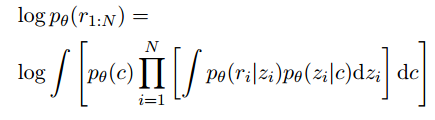
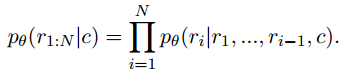
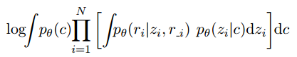
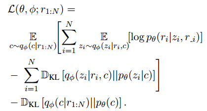
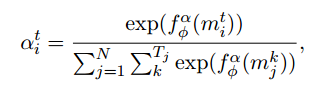
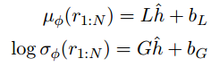
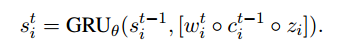
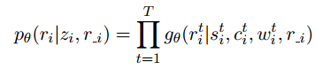

Unsupervised Opinion Summarization as Copycat-Review Generation
Abstract
本文任务是做Opinion summarization，即给定多个具有主观倾向的文档，生成一个较为客观简短的摘要。最典型的就是对评论的摘要（如电影评论、商品评论等）。
之前的观点摘要大多是抽取式方法。本文是生成式方法。
通常依赖于大规模的（文档-摘要）对作为监督。但是在很多领域没有这种监督数据且构造困难。
因此本文提出一种无监督的观点摘要方法：从生成模型的角度来考虑摘要任务，使用层次VAE来根据一个商品的许多评论，生成一个评论摘要。
1 Introduction
之前的方法依赖监督数据。但是对这种数据进行标注很难。而且领域众多，要标的话每个领域都要标，没有普适性，而摘要又是一个领域敏感的任务。因此估计一时半会只能借助于无监督或者弱监督的方法了。本文的方法则不需要任何（文档-摘要）对来训练。
背后的思想是：在根据一个产品的许多评论生成一个摘要时，可以控制这个生成的摘要含有新内容的程度（这个“新内容”理解为原始评论中没有包含的内容）。然后在测试时或者实际应用时，强制使得新内容的程度为最小，这样就能生成与原始评论内容一致的评论作为最终摘要。
为了实现这个想法，本文使用了一个层次VAE模型。
本文贡献总结如下：
- 提出了一个端到端的无监督的生成式摘要方法
- 该模型相比之前的模型在自动评估和人工评估中都具有显著的性能提升
- 提供了一个Amazon商品的生成式摘要的数据集。
2 Model and Estimation
2.1 Overview of the Generative Model
数据包含多组评论，每组评论对应一个商品。
COPYCAT模型可以看作是普通VAE的变种，使用两组隐变量（latent variable），如图1所示。
每组评论（也就是每个商品）对应一个隐变量 $c$，捕捉商品的语义信息；每个评论$r_i$对应一个隐变量$z_i$，捕捉该评论的语义信息。
decoder $p_{\theta}(r_i|z_i)$ 根据隐变量$z_i$来生成评论$r_i$。一组评论的对数似然则如下：

这样有一个不足是，在生成评论$r_i$时，给定之前的评论$r_{1:N}$，这些评论的信息都需要通过隐变量$c$和$z_i$来传递，这样就造成了一个瓶颈。
举个例子，在生成一个评论时，很可能需要用到商品的名称啊之类的命名实体，这些名词很可能会在其他的评论中出现。因此在生成评论的时候，最好能够同时访问到其他评论的信息。
因此本文使decoder能够直接访问到其他评论的信息。整个过程建模为一个自回归模型：

也就是给定商品隐变量$c$和前面的$i-1$个评论$r_1,…,r_{i-1}$，生成评论$r_i$。这里的条件是用pointer-generator机制实现的，因此能够帮助生成稀有单词（如命名实体）。
由于一个产品的所有评论应该是同等对待的，而不应该受顺序的影响（例如时间顺序等）。因此如图1中b所示，decoder在生成$r_i$时，可以访问该商品的所有其他评论$r_{-i}={r_1,…,r_{i-1},r_{i+1},…,r_N}$。于是最后的目标就变成了最大化生成每个商品的所有评论$r_{1:N}$的概率：

在退化实验部分会验证，商品隐变量$c$和直接访问其他评论这两种机制都具有很重要的作用。
2.2 Model Estimation
对于模型的推导部分，具体就是VAE模型的推导过程。
对目标函数的优化改为对其下界的优化：

公式的推导过程这里就省略了，本文在附录中给出了详细的推导过程。这里简单描述一下目标函数的物理含义。
- 第一项$\mathbb{E}{z{i}\sim q_{\phi}(z_i|r_i,c)}[\log p_\theta (r_i|z_i, r_{-i})]$表示重构损失，也就是在生成评论时尽量保证生成的内容的一致性。
- 第二项最小化$\Sigma_{i=1}^{N}\mathbb{D}{KL}[q{\phi}(z_i|r_i,c)||p_\theta(z_i|c)]$，这里$q_\phi$表示我们拟合的分布生成$z_i$的分布，而$p_\theta$表示根据$c$生成$z_i$的真实分布，这个真实分布我们未知，但是一定存在且唯一。正因为我们不知道这个真实分布，因此我们需要让$q_\phi$尽量去逼近真实分布$p_\theta$，然后我们用$q_\phi$去代替真实分布进行生成。
- 第三项最小化$\mathbb{D}{KL}[q_\phi(c|r{1:N})||p_\theta(c)]$，同样，$p_\theta$表示真实的$c$的分布，这个分布存在且唯一但是我们不知道，于是我们用一个$q_\phi$去拟合。这一项损失就是使$q_\phi$尽量逼近真实分布$\p_\theta$。
注意，用来生成特定评论的后验分布的$q_\phi(z_i|r_i,c)$只在训练时需要，在真正生成评论时，只使用$q_\phi(c|r_{1:N})$来生成评论。
2.3 Design of Model Components
2.3.1 Text Representations
文本的表示使用GRU将评论的每个单词作为输入，得到最后的隐层向量作为评论的表示。生成商品隐变量$c$和特定评论的隐变量$z_i$的过程如图2所示。本文中所有的分布都假设是高斯分布，用独立的线形层来计算均值和方差。
2.3.2 Prior $p(c)$ and posterior $q_\phi(c|r_{1:N})$
$c$的先验分布假设为标准的正太分布：$p(c)=\mathcal{N}(c;0,I)$。
为了计算近似后验分布$q_\phi(c|r_{1:N})$，首先计算每个评论中每个单词的重要性：

其中$T_i$是评论$r_i$的长度，$f_\phi^\alpha$是feed-forward神经网络，它将词嵌入和GRU encoder得到的隐层表示的拼接作为输入，$m_i^t=[h_i^t\circ w_i^t]$，返回一个标量。
然后用计算得到的$\alpha$作为权重，得到中间表示：
$$ \hat{h} = \Sigma_{i=1}^{N} \Sigma_{t}^{T_i} \alpha_i^t m_i^t $$
最后采用 affine projections 计算高斯分布中的参数（即均值和方差）如下：

2.3.3 Prior $p_\theta(z_i|c)$ and posterior $q_\phi(z_i|r_i,c)$
$z_i$的先验分布也假设为高斯分布：$p_\theta(z_i|c)=\mathcal{N}(z_i;\mu_\theta(c),I\sigma_\theta(c))$，其中的均值和方差则是通过对$c$进行线性映射得到。
同样，近似后验概率$q_\phi(z|r_i,c)=\mathcal{N}(z;\mu_\phi(r_i,c),I\sigma_\theta(r_i,c))$的计算，则是通过拼接encoder最后时刻的隐层状态$h_i^{T_i}$和$c$，然后进行affine transformations得到。
2.3.4 Decoder $p_\theta(r_i|z_i,r_{-i})$
生成评论的分布（也就是Decoder）是用带有attention和copy机制的GRU实现的自回归模型。
首先计算context vector $c_i^t=att(s_i^t,h_{-i})$，也就是让decoder的隐层状态与encoder得到的其他所有评论的隐状态$h_{-i}$计算注意力，$s_i^t$作为query，$h_{-i}$作为key和value，得到context vector $c_i^t$。其中$s_i^t$是Decoder的隐层状态：

这里的输入包括前一时刻的隐层状态$s_i^{t-1}$，以及词向量$w_i^t$，context vector $c_i^{t-1}$和商品隐变量$z_i$的拼接。
最后使用pointer-generator网络$g_\theta$来计算单词分布：
pointer-generator网络具备生成和copy能力，从而能够帮助生成稀有单词。
3 Summary Generation
给定评论$r_{1:N}$，本文通过生成一个新评论作为这些评论的摘要：

另外，文本生成应该从商品隐变量的均值生成，因此不是用的$p_\theta(z|c)=\mathcal{N}(z;\mu_\theta(c),I\sigma_\theta(c))$，而是直接从$\mu_\theta(c)$中生成的$z$，而均值$\mu_\theta(c)$是由网络$q_\phi(c|r_{1:N})$生成的。
4 Experimental Setup
实验结果如表所示。
Ending
VAE终于也开始被用到摘要上了。。。